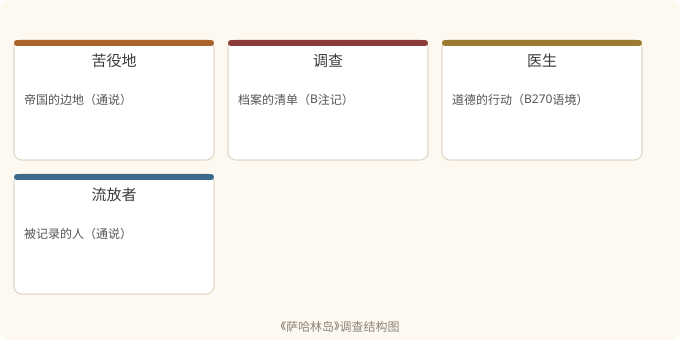

萨哈林岛
一、基本信息
| 作者 | 安东·契诃夫 |
|---|---|
| 成书/出版 | 1893-94年（作者页注记：Britannica——萨哈林岛 (1893—94)——苦役地调查报告） Anton Chekhov — Encyclopaedia Britannica (by Ronald Francis Hingley)（百科全书） |
| 国别/地区 | 俄国 |
| 时代 | 近代 · 19世纪90年代 |
| 体裁 | 调查报告 |
| 语言 | 俄语 |

《萨哈林岛》调查结构图（主题·结构图）
二、创作背景
作者页注记：萨哈林岛 (1893-94)——'苦役地调查报告（Britannica）'。
Britannica（B270）：契诃夫——医生作家（作者页语境）。
题材（通说待核）：1890年横跨西伯利亚的苦役岛调查——人口普查式的记录。
三、内容脉络
（通说待核）苦役犯、流放者与移民的清单式记录。
（通说待核）'我为文明欠债'的动机。
四、主要人物表
| 人物 | 身份 | 说明 |
|---|---|---|
| 契诃夫（调查者） | 医生/作家 | （B270 语境） |
五、主题与艺术特点
- 苦役制度的档案（通说待核）。
- 医生的道德行动（B270 语境）。
- 帝国边地的报告文学（通说待核）。
六、影响与评论
- Britannica：萨哈林岛 (1893-94)（作者页注记）。
Anton Chekhov — Encyclopaedia Britannica (by Ronald Francis Hingley)（百科全书） - Britannica：契诃夫'医生与作家'的双重身份（B270 交叉——待核）。
Anton Chekhov — Encyclopaedia Britannica（百科全书）
七、阅读建议
难点
- 流放制度史。
- 报告文学与文学的边界。
- 《萨哈林岛》中译名（《萨哈林旅行记》两说——通说待核）。
- 俄文原版（公有领域）。
契诃夫散文側面；与《萨哈林旅行记》译本对照。
八、待核实
- 1890年之旅与1893-94成书年份核对（B注记）。
- 人口普查细节待核。
- '债'的说法出处待核。